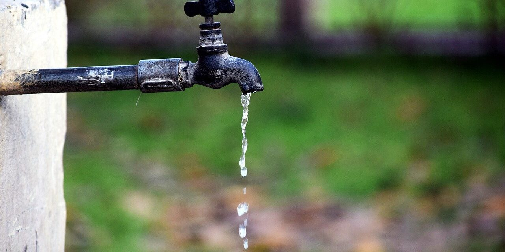

L'acqua, il bene più prezioso. Non sprecarla!
Acqua, l'allarme è mondiale: a secco un miliardo di persone
Un miliardo e 200 milioni di persone nel mondo non hanno accesso all'acqua potabile e 2,4 miliardi non hanno abbastanza acqua per soddisfare le esigenze igieniche: una carenza che costa 3.4 miliardi di vite ogni anno. Sono questi i dati più drammatici che sono stati presentati alle celebrazioni della giornata mondiale dell'acqua. È una catastrofe che colpisce prevalentemente il Sud del mondo, ma che interessa anche l'Europa: secondo le stime dell'Onu pubblicate ieri a Ginevra, un europeo su sette non ha accesso all'acqua potabile e a infrastrutture igieniche adeguate.

“Senza una convenzione internazionale e globale sull'acqua, che stabilisca regole chiare e coerenti per
orientare e amplificare gli sforzi intrapresi, le cose non potranno migliorare”, sostiene Guido Pollice,
vicepresidente di Green Cross International.
Solo quando si è coinvolti in disastri ecologici di vaste proporzioni si comprende quale importanza
riveste
per
l'umanità questo “umile” quanto preziosissimo bene. L'uomo usa l'acqua in mille momenti della giornata:
dal
mattino appena alzato per lavarsi, a quando cucina, o ancora quando ha sete per dissetarsi.
Una parte dell'acqua viene persa per scelte agricole sbagliate, un'altra parte viene risucchiata dai
buchi
neri
della rete. La Commissione economica delle Nazioni Unite per l'Europa stima che a Mosca fino al 60 per
cento
dell'acqua potabile è persa nel corso della distribuzione prima di raggiungere il consumatore a causa
della
vetustà delle infrastrutture. A Berlino, la percentuale è del 5 per cento. Nel Sud Italia si raggiungono
picchi
superiori al 50 per cento.
Secondo i dati di Legambiente, nel 1975 la perdita del volume d'acqua era del 21 per cento, oggi la
dispersione
è arrivata al 40 per cento contro una media europea di appena il 13 per cento. Il disastro trova il suo
picco
nel Mezzogiorno dove il 78 per cento della popolazione ha una disponibilità insufficiente di acqua: non
per
la
mancanza di acquedotti, ma per la loro cattiva gestione.
| Consumi di acqua per alcuni usi personale | ||
|---|---|---|
| Utilizzo | Quantità (litri/giorno) | Quantità (litri/utilizzo) |
| Bevande | 2,5 | - |
| Lavarsi le mani sotto acqua corrente | - | circa 18 |
| Lavarsi i denti sotto acqua corrente | - | circa 12 |
| Lavarsi i denti con un bicchiere | - | circa 0,5 |
| Doccia | - | 20 - 80 |
| Bagno in vasca | - | 150 - 350 |
| Sciacquone | - | 10 - 20 |
| Lavatrice | - | 100 - 200 |
| Lavastoviglie | - | 40 - 60 |
Spreco d'acqua: i numeri in Italia
L'acqua è un bene prezioso, il più prezioso che abbiamo. Lo sappiamo tutti. Eppure lo spreco d'acqua è ancora un problema decisamente preoccupante in Italia e in gran parte del mondo, con numeri da capogiro. Una tendenza che deve essere assolutamente invertita, con la responsabilizzazione dei singoli cittadini, ma soprattutto con l'impegno di Governi e imprese. Hai mai letto qualche dato sugli sprechi di acqua in Italia? Conoscerli ti aiuterà a capire l'entità di un problema che non può essere ignorato. In Italia sprechiamo 104.000 litri di acqua al secondo. Basta fare un rapido calcolo per scoprire che si tratta di ben 9 miliardi di litri al giorno! Lo spreco di acqua potabile è pari al 42% dell'acqua che scorre lungo i 500.000 km di rete di acquedotti. Non occorre essere esperti del settore per capire che si tratta di numeri preoccupanti.
Migliaia di persone hanno vissuto senza amore, ma mai nessun essere umano ha vissuto senza acqua.
Una buona notizia: si può cambiare rotta!
Per invertire la rotta, il cambiamento deve coinvolgere tutti. Abbiamo già parlato dei 10 modi per ridurre lo spreco di acqua in casa, ma devono essere soprattutto governi e imprese ad intensificare il proprio impegno, con piani di sviluppo adeguati che puntino a ridurre lo spreco d'acqua e di energia. E proprio per discutere di questi temi Waidy WOW con Acea prende parte ad Ecomondo, il più importante evento green in Europa sull'innovazione tecnologica sostenibile. Un'occasione preziosa per presentare il proprio impegno per l'ambiente con fontanelle dell'acqua hi-tech e l'App che aiuta gli utenti a geolocalizzare le fontanelle e ridurre il consumo di plastica.
Article by:
Gabriele Rotundo
tel: 123456789